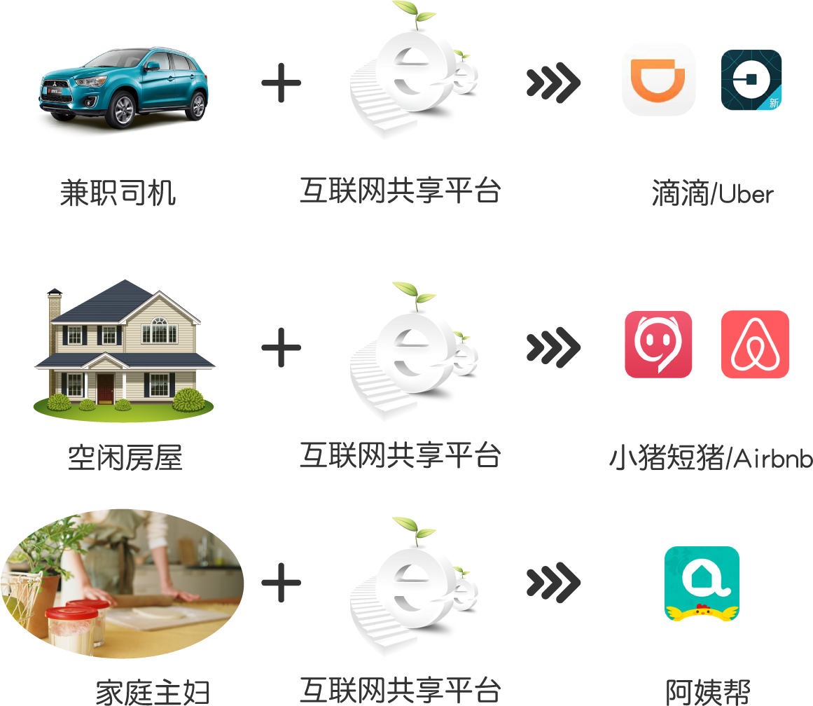

分享经济的前世今生
“分享”这一概念是很容易理解的，因为我们打小从幼儿园的时候，就被教育说要主动分享，乐于助人。 “分享”这更是慈善事业中的主旋律。 用一言而概之，就是将自己的(既有资源)，与他人分享。
“分享经济”这一概念则是最近几年才明确地提出来的。 然而往往却和”公司租赁”混在一块，在我看来，这错得离谱，他们有着本质的不同。 而目前“租赁经济”只不过是披着互联网皮的传统公司租赁模式。
那么“租赁经济”和“分享经济”最本质的不同之处在哪里？
虽然“分享经济”看上去和“租赁”差不多，都是“资源”出借的方式。 但是本质的区别在于“租赁模式”是一家公司的将采购（全新购买）的资源租赁出去，并从中获得金钱收益的方式，而“分享经济”则是将每一个人(人人)已有的闲置资源进行充分利用，不仅仅是租赁（还可以是交换，赠与，甚至买卖的方式），这实质是一种协同消费(collaborative consumption)，也是第一代分享经济的主要特征。
再从社会效益来看，“租赁经济”并不能起到节能降排的目的，而是恰恰相反，因为它不是在利用现有资源，而是去生产新的投放市场。它的目标只有一个：盈利，甚至可能为了公司的利益目标，去生产资金回笼快的劣质产品，进而危害公共安全。而“分享经济”则能解决社会闲置产能，重新分配商品的使用价值。利用互联网匹配各种闲置产能供给和需求。
由此我们看到分享经济的本质特征是在最终用户之间(P2P)的分享或交换(Share/Exchage)资源(Resource)。
- P2P(Peer to Peer): 最终用户对最终用户
- Share/Exchage: 共享或交换
- Resource(资源): 这里的资源是泛指，包括电子信息和实际资源（产品，时间，技能，金钱等等)
现阶段的分享经济
现阶段的一代分享经济，是以互联网为信息平台，在各个垂直领域中使得人人能对自己的信息和资源进行分享。
信息分享
首当其冲的是信息分享，随着社交网络服务(SNS)的出现，将个人的兴趣、经历、成果或心情分享出去，会让自己得到满足感。 很多人在做或做完某件事以后，往往想要分享给家人和朋友，亦或是陌生人，如果这些人对自己的分享是认可的、开心的或互动的，那么分享者自身也会很开心，这就是分享的动力。
- 分享自己知识经验整理成文的这是博客。
- 通过关注周边发生的新鲜事，再以新奇视角的方式随时随地向公众进行分享，而这成就了微博(twitter)。
- 通过兴趣、休闲，炫耀，把私密和心情进行身边生活圈子分享，成就了微信(Facebook)
- 把生活经(履)历，心得向特定群体进行分享，成就了Pinterest
资源分享
接着下来的是资源的分享和交换。

“资源”分享的一个典型案例是”AirBnB”，故事是这样开始的，07年在旧金山的两个刚毕业的美国小伙儿为自己的房租发愁，而当时城里正好在举办一个设计展，周边的旅馆都被订满了。 两位年轻人突发奇想，搞来了三张充气床垫放在客厅，建了一个简陋的网站发布信息：宣布任何参会者只要支付每晚80美元的费用，就可以享受到气垫床加早餐（AirBed & Breakfast）的服务，和传统的借宿相比，通过 AirBnB，不再局限于熟人圈子，参与“分享”者的数量大大增加，借宿发生的地理空间也得到极大地拓展，同时借宿过程变得更加便捷，借宿体验变得更加有趣。 AirBnB 也因此成为“分享经济”的典范。
这实质是基于P2P租赁的“产品”服务。 我们要喝牛奶，但不必家家户户都养奶牛，这是显而易见的。 可是只要我们在家里环顾一下，便不难发现我们可没少干“养奶牛”的事。 举个极端的例子，美国有一半的家庭都拥有电钻，而平均每个家庭使用电钻的时间只有6 -13分钟！ 显然， 人们忘记了自己要的是打一个“洞”，而不是拥有一个电钻。 既然某些东西利用率如此之低，那么与其买一个闲在家里，不如临到用时才去借一个。 这种“使用而非占有”的观念如今已被越来越多的人接受。 它挑战了传统的建立在“私有独享”基础上的经济模式。
在家里，不仅有电钻这类使用频率很低的东西，其实还有很多东西人们压根就用不著。 对于这类物品，过去要么只能扔掉，要么当废品廉价卖掉，如果舍不得的话，那就只能堆在家里给自己添堵。 而现在拜互联网所赐出现的许多创新的平台，可以帮助人们更加有效地处理这些二手物品。 比如基于二手转让或交换的市场再流通的 Swapub 平台。
基于”服务技能”的分享协同生活,可以说是新时代下的”我为人人，人人为我”,早在上世纪80年代，就有人倡议社区居民相互提供服务，每个人的服务时间都记录在一个“时间账户”中，将来需要别人来为自己提供服务的时候，就可以从这个账户中“提取”时间。 如今这一模式已经在社区志愿服务、社区养老等领域广泛开展，在中国的一些城市里也已经出现了一些尝试。
基于集体智慧的众创众筹，对于酷爱DIY的创意者，通过众筹平台，把自己的创意变成现实的产品越来越普遍了。 互联网的到来，使得渺小个体也能发出自己的声音，也能被众感知和放大，这也是众智时代的到来。 从国外的kickstarter,india..,到国内的京东众筹，淘宝众筹…无一不在体现着这一趋势。 当然国内，我更多的看到是公司行为，把自己新发布的产品放在众筹上作为一种市场预售罢了。
分享经济的社会意义
“泛太平洋垃圾带”自1997年被发现后，如今它的面积已经达到350万平方公里，相当于法国面积的7倍,而这堆塑料垃圾的面积每年会增加8万平方公里。由此说明，现代社会物质其实已经足够多了，已经达到泛滥的程度，但是过度的消费和不合理的分配导致物资无法惠及每一个人。
- 人们不停追逐更新、更好、更便捷的产品所有权，而旧的产品成为垃圾
炫耀性消费和透支消费导致高消费主义的发展，人们被引诱购买名不符价的狗牌产品：“爷就是有钱”
不过人们已经开始逐渐认识到:
“幸福并非来自物欲，而是来自感同身受。当我们在迟暮之年回首自己的人生经历时，在我们的记忆中突颖而出的很少会是关于物质利益、名誉或是财富方面的。触动我们内心深处的时刻就是那些同感激荡的时刻，来自于我们自身的超然感觉以及对他人通过奋斗获得成功的满足感的体会，仿佛那是我们自己的成功一样。” - 零边际成本社会
而随着社交网络服务(SNS)的发展进一步推动了“分享”文化的普及。 对于生活在互联网时代的人来说，在社交网路上发表自己的观点(照片,视频)或转发内容的行为近乎成为了一种本能，而正是这种“本能”的分享为“分享经济”的快速扩散打下了结实的基础。
随着年轻人越来越关心地球环境和资源的有效利用，习惯消费二手物品，更愿意过轻资产的生活，在这些的人眼中，成功的标志正在发生变化。 在分享经济领域，目前最活跃的市场是汽车和房产，这两样一般是家中最值钱的东西，通常被传统观念认作是最能体现身份地位的东西，但如今，越来越多的人选择分享它们而不是拥有或独有。 当然，很多人是出于现实经济的考虑。
分享经济创造大量的经济商业上的机会的同时，也产生了许多积极的社会效应。 其中最重要的一点就是恢复日益匮乏的社区感。 如今，整个社会都在进入一个更加开放和高度流动的现代社会。 人们纷纷离开原本的社区，进入到陌生的社区中生活。 分享经济可以增强社区凝聚力和活力，阻止了传统社区无社交的尴尬。
分享经济将会创造一个更加开放多元分享合作的社会(社区)，在这样的社会中，整个社会经济体系中的权力不再集中于少数供应商、生产商手中，因为通过共享经济，人们有条件有能力依靠自己解决更多的问题，满足自己更多的需求，也创造出更多的合作模式。
在传统商业模式的逻辑中，每个人都是社会经济体系中固定的一环，彼此的角色是对立的，要么是消费者，要么是生产者；这些角色之间的权力关系往往是不平等的，中间商可以压榨剥削小农，生产商可以欺瞒诱导顾客；这些角色彼此之间的关系是竞争的，我的获益多了，你的利益就会少了。 而在共享经济中，人们满足需求的方式可以是赠送、可以是交换、可以循环利用，可以临时借用，可以共同创造，可以共同使用，彼此的关系是利益共享的，我的获益多了，你的获益也不会减少。
越来越多的人将从雇佣就业走向创业式就业，从公司管理走向平台化的协同，从全职工作走向兼职工作，从机械的流水线作业走向自由灵活的“云上”作业，从办公室与工厂走向更个性化的居家与旅途。 与此同时，分享经济将重塑社会组织，“公司+员工”将在越来越多的领域被“平台+个人”所替代。 分享经济的发展让参与者比较自由地进入或退出社会生产过程，减轻了个人对组织的依赖程度，个人的创新创业潜力将从办公室、流水线的束缚中释放出来。 越来越多的个人将不再依附于某个特定的企业或机构，分享经济平台将成为灵活就业、个人创业、社会交往的空间。 个性化服务与生产自然也不再话下。
而这一切需要某种能让参与各方都能得到信任平台，这个平台也只有是各方共建的平台才能办到。
现阶段分享经济平台的问题
现阶段的一代分享经济平台，只是传统商业模式下的各个垂直领域封闭的个体经济平台，各自跑马圈地。 谋求各自利益最大化而封闭，自然就谈不上“分享“和”共赢“。
以微信为例，如果你想在微信上看到淘宝链接的信息，那是很麻烦的一件事情，你点连接，看不到任何内容，即使你用浏览器打开，也看不到，你必须手工选择复制粘贴淘宝链接地址到浏览器，所以出现了所谓的“淘口令”，当然淘宝也没少干封杀微信的傻事，不过没人在乎。
而再以淘宝来说，T宝最开始是提供开放的API接口的，但是自从15年开始，API不再开放了,大部分转为开始收费，哪怕是页面公开的产品信息，如果通过API调用获取也要收费，所以大家开始页面爬虫抓取。 14年的时候比价网比比皆是，到如今所剩无几。 一边说让天下没有难做的生意，一边却想方设法阻碍信息的分享和流通。
再说目前各个平台的EULA（最终用户许可协议），其实就是网络用户的使用合同，既然是合同，当然需要符合中国《合同法》与《消费者权益保护法》中关于格式条款的规定。 但遗憾的是，没有任何一家互联网公司能够达到上述法律的要求。 最近淘宝又更新了用户协议，规定在淘宝、支付宝平台的非活跃用户在一定时间之后将会进行销号处理(不同意请主动销号)，淘宝帐号还好，支付宝帐号如果有余额的话，对于6个月内无交易的用户，并且因为某些原因无法配合（核实身份），那么支付宝就可以有权注销该用户，真是霸道的条款，平台能没收用户的财产？
如您自开立支付宝账户之日起6个月内无主动交易，则向您重新核实身份之前，支付宝将有权暂停或者注销该支付宝账户。
因为平台上保存有用户数据，于是他们决定用户数据的如何使用，而非基于用户自己的决定（授权），这些用户数据真的是平台的？如果是，那么这意味着平台拥有用户的财产，这显然荒谬，实际上，这应该是用户委托平台保管用户数据。 平台只应该是数据托管方。什么时候见过没有用户授权就可以乱动用户财产？
在拿众筹举例，《星际公民》算是游戏众筹的一个奇迹。 自从 2012 年著名众筹网站 Kickstarter 发起第一轮众筹起，三年时间，这个游戏在各种平台上已经募集了超过 8500 万美元，折合人民币超过 5 亿元。 而《魔兽世界》十年来的全部研发加诸多资料片的费用才不过 1 亿美元。 然而众筹投资者得到的是什么？除了跳票和玩游戏半成品，其他什么权益也没有。因此这样的众筹，引来一堆的骗子项目。 这实质上应该归属礼品经济，而非产品销售，因为这个时候产品并没有开始研发，对于是否能真的拿到产品，以及什么的产品，需要自行承担研发风险，这实际上就是P2P风投。 但是投资用户却没有相应的比例的收益，最多能免费先玩一玩，这样的投资者，哪里去找！
再说说信任，当前，几乎所有提供分享经济服务的平台在应对信任问题时，都采取了“评分”机制。 租借双方都必须填写详细的个人数据，在分享活动结束后，可以给对方评分。 但是这样的“评分”仅限于平台内部，当然，这个“评分”也不会有任何的分享，或者保证不被串改，删除。 你只能信任平台，信任平台的员工。
那么到底下一代分享经济（共享经济）如何实现，什么样的平台才能完全避免上述问题？
欲知后事如何，且听下回分解。待后续(TO BE CONTIUNED)….
鸣谢
感谢朋友们提供的宝贵意见，特别感谢同事周悦的一幅图及钓鱼的例子（略有改动），尤其是庄表伟，在对本文的提纲上给于我很多宝贵意见。谢谢朋友们。还有朋友提到文章篇幅过长，这也是个问题，所以我决定分成系列篇，本文以及接下来的部分还要作大量的修改，表伟已经承诺一起来写，欢迎之至，因此这所有的一切都还不是最终定稿，后面还更精彩。